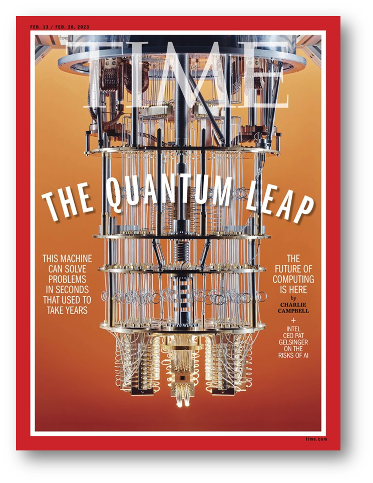
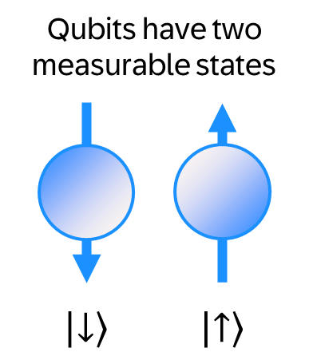
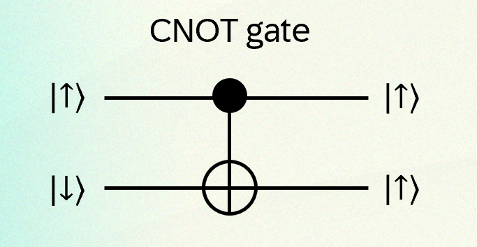
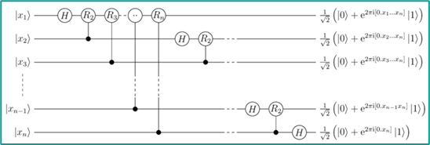

1 Introduction
In February 2023, Time Magazine displayed a quantum computer overlaid with the words “The Quantum Leap” (Charlie Campbell 2023). In smaller print on each side were headlines “The future of computing is here” and “This machine can solve problems in seconds that used to take years”. This is just one of many recent popular investigations reflecting an increasingly bullish outlook for quantum computing.
It’s an outlook bolstered by new funding announcements. On April 30 Australia announced an investment of almost $1B in PsiQuantum “to build a groundbreaking utility-scale fault tolerant quantum computer” (Department of Industry, Science and Resources 2024). The state of Illinois may be looking to build a $20B campus). McKinsey & Company report a leap in start-up investment in quantum computing to $1.8B in 2022, about ten times the investment of three years previous (McKinsey & Company 2023).
All this builds on research results coming from both universities and from major technology companies. If there is a single event that prompted the new excitement it was the publication of a provocatively-titled paper from researchers at Google: “Quantum supremacy using a programmable superconducting processor” (Arute et al. 2019). “Quantum supremacy” is a claim that a quantum computer can carry out tasks that no classical computer could carry out.
Our Sycamore processor takes about 200 seconds to sample one instance of a quantum circuit a million times—our benchmarks currently indicate that the equivalent task for a state-of-the-art classical supercomputer would take approximately 10,000 years. This dramatic increase in speed compared to all known classical algorithms is an experimental realization of quantum supremacy for this specific computational task, heralding a much anticipated computing paradigm.

The TIME magazine article suggests that this much-anticipated paradigm is already bearing fruit:
Quantum’s unique ability to crunch stacks of data is already optimising the routes of thousands of fuel tankers traversing the globe, helping decide which ICU patients require the most urgent care, and mimicking chemical processes at the atomic level to better design new materials..
So if you have been thinking of quantum computing as a still-speculative research program with no short-term implications then this might come as a bit of a shock. It’s out there in the real world, doing things! And this would be impressive…if it were true.
But we shall come to that later on. Regardless of the rights and wrongs of these claims, there is no doubt that quantum computing has moved from the fringes of academic research to claim the attention of business boards and government policymakers.
There have been many introductions to quantum computing. If there is justification for yet another one, it is that I will try to dodge some of the mystification that often comes with discussion of quantum phenomena and instead answer these questions:
How do you build a quantum computer? And are we going to have quantum laptops?
How does a quantum computer compute? In what ways is it different to a “normal” classical computer?
Why should we care? What advantages, if any, does quantum computing offer?
What is its status now? and what are its prospects?
2 How to build a quantum computer
You have probably heard that whereas regular computers are built around bits, quantum computers are built around qubits. So what does that look like?
The archetypal example of a qubit is an atomic nucleus with a spin of ½, like the 89Y isotope of Yttrium. The nucleus acts as if it were an electrical charge spinning in one direction or the other, and this spinning electrical charge creates a little magnet that can be pointing either “up” or “down”. Any measurement of the spin of the nucleus along a given axis will give the value +½ (up) or -½ (down)—two values that can represent \(0\) and \(1\), just as a classical “bit” might be a transistor that can take on a state of “on” or “off”. You may have heard that qubits can exist in combinations of 0 and 1, but let’s leave that to one side for now.

Qubits may be built from atomic nuclear spins, using nuclear magnetic resonance, but can in principle be built from any other system that displays this two-level behaviour.
Some research groups have built quantum computers with atomic-scale qubits, like arrays of charged ions trapped in space by electromagnetic fields or arrays of neutral atoms.
Other researchers are exploiting macroscopic quantum phenomena. Google and others use qubits based on superconductivity in circuits of maybe a micrometre in size: the current in a superconductor is quantized. And there are other approaches (often called “modalities”) too: photonics, topological “anyons” and more.
A feature of quantum computing is that it has divided into two areas: building a quantum computer (using a particular modality) and developing quantum algorithms (that could, in principle, run on a quantum computer built with any of these modalities).
Perhaps one thing that we can infer from the large number of qubit “modalities” being pursued is the uncertainty that remains regarding progress. If there were a clear path from a particular design to a general purpose quantum computer, then the industry would coalesce around that modality. The fact that is hasn’t suggests that each modality has challenges that remain, and reasons for optimism that its proponents will champion.
3 How quantum computers compute
Whatever approach you choose, you want to build a computer out of these qubits. So the next thing you want for a computer is logic gates. In a classical computer the simplest gate is this NOT gate.

The NOT gate has one input and one output. If the input is 0, then the output is 1. In classical computers, the lines are wires and the shield-symbol is etched into a chip and the bits are charges moving through the gates.
In the world of quantum computers, the qubits stay where they are: it’s called “in-place computing”. If you can shine a laser at one particular qubit and cause it to flip from one of its states to the other, then that’s like a NOT gate: it turns the 0 into 1 and the 1 into 0. In quantum computing circuit diagrams, the lines are not wires, they are before and after states of the qubit.
Most classical gates have two inputs, like XOR and NAND, and many quantum gates can also have two inputs. Here is a “Controlled NOT gate” or CNOT gate, which is an important component of quantum computers. If the top qubit is spin down, the bottom qubit is unchanged. If the top qubit is spin up, the bottom qubit is flipped.

Again, if this were a classical computing gate, the bits would travel along the wires, going in from the left and out on the right. But in quantum computing the gate is not an etched feature of a circuit. It’s an operation—a combination of laser or microwave pulses that changes the state of the qubits—and the qubits stay in place.
The next thing you want to do is implement algorithms. In classical computers you have a fixed circuit and programming instructions send bits through these fixed gates to implement an algorithm. In a quantum computer, you start with a set of qubits in a prepared state (usually all \(|0\rangle\)), and apply a sequence of gate operations and then measure the output. So a circuit is how you implement an algorithm.
Here is a bigger circuit diagram for a three-bit quantum fourier transform, which turns out to be important in the Shor algorithm for factoring integers. You have n qubits, you prepare them in some initial state |xi>, you subject them to a series of gates, and you end up with some outputs which you measure.

3.1 Quantum computers as “general purpose”
When I started looking at circuit diagrams like this I thought it contradicted the idea of quantum computers as general purpose computers, because it looked like you had to have different circuits for different algorithms. But once you realise that a circuit is not a permanent thing but is instead a sequence of operations (gates) that implement an algorithm, then it’s not a contradiction at all.
So are quantum computers general purpose? Well yes and no.
Formally they are. That is, there is a set of gates (different to the gates for classical computing) which satisfy the requirements for Turing completeness. So that’s nice.
But what about general purpose in the practical sense? Let’s go back to how you build quantum computers.
No matter what approach you take, the set of qubits must exist in a single quantum state. Quantum states fall apart or decohere when interacting with the wider world, so they have to be isolated. Also, thermal energy will jiggle these qubits among the states and you can’t have that, so quantum computers of whatever type have to be operated at very low temperatures, meaning about 1K.1
This has consequences:
You won’t, in the foreseeable future, have a quantum computing laptop. Quantum computers need cooling and will be built in fixed locations.
It’s going to be expensive to build them. And so your company won’t be buying many quantum computers any time soon. It makes sense to have specialised providers who will provide time on them through a cloud service. Timesharing on a mainframe.
For any algorithm that can be executed either classically or in a quantum computer, classical is going to be roughly a gazillion times cheaper for the foreseeable future. You won’t be running most of your code on a quantum computer.
BUT there are certain tasks that may be done more quickly on a quantum computer than on a classical one. So specific function calls within a larger program may be executed on a quantum computer, and the rest will be done on a classical one.

The emerging paradigm is of a cloud-hosted data centre where an application can use classical computers but have access to quantum computers to run these specific functions. Perhaps it’s not surprising that Microsoft, IBM, and Google are at the forefront and Amazon (AWS) is now investing heavily: they want to host them, and rent them out to their cloud users.
3.2 Quantum computing libraries
The companies providing quantum computers want people to use them, so they provide libraries or modules that you can use. For example, Google and IBM provide python libraries (cirq and Qiskit, respectively) and Microsoft provides the Q# .NET programming language. These libraries provide an interface to the host quantum computers and, more practically for most of us, provide a way to simulate quantum computing on a local classical computer, for small cases.
So here is some code that uses Google’s cirq library for python. It defines two qubits and a list of gates that operate on those qubits. Then it creates a circuit from the gates, and runs the circuit on a simulator on your local computer. As the algorithm is very simple, the quantum computation can easily be simulated on a classical computer. If you’re familiar with the python programming language, you can easily install cirq by typing pip install cirq at a command prompt. Here is a “hello world” example to give you an idea of what the code looks like, which each step described by a comment.
import cirq
# Define two qubits
qa = cirq.NamedQubit('source')
qb = cirq.NamedQubit('target')
# Define a list of gates: a "Hadamard" gate on each qubit,
# followed by a CNOT gate, and then a measurement of qubit qa.
gates = [
cirq.H(qa), cirq.H(qb), cirq.CNOT(qa, qb), cirq.measure(qa)
]
# Create a circuit from this list of gates
circuit = cirq.Circuit(gates)
print(circuit)
# Simulate the execution of the circuit
simulator = cirq.Simulator()
result = simulator.run(circuit)
print(result)The “print” instructions display an ascii-art rendering of the circuit and the results.
4 Quantum computing algorithms
Building a new kind of computer, defining new ways to express algorithms, providing new coding libraries, integrating computers with existing cloud services… This is all a lot of work. Why would you bother? The approach is of interest only because quantum computing has been shown to have an intrinsic advantage over classical computing, at least in principle, for certain kinds of problem. Part II of this introduction (link to come) is an attempt to describe this advantage in detail, but here we shall skip lightly over the essential details. It won’t be enough to understand what’s going on, but it may be enough to orient you to some of the descriptions you see elsewhere.
4.1 Superposition and interference
The idea of quantum advantage relies on a combination of two phenomena that are consequences from the wave/particle nature of quantum systems.
One is that qubits exist in superpositions of states. That is, although any measurement of the qubit will show it to be in state \(| \uparrow \rangle\) or \(| \downarrow \rangle\), in general the qubit can be in a state that is a superposition of these two, and it has what is called a wavefunction or (equivalently) a state vector \(| \psi \rangle\) (the Greek letter psi) given by:
\[ | \psi \rangle = \alpha | \uparrow \rangle + \beta | \downarrow \rangle \]
The \(| \uparrow \rangle\) and \(| \downarrow \rangle\) states, which are the possible outcomes of measurement, are called basis states 2 or eigenstates. The coefficients \(\alpha\) and \(\beta\) are probability amplitudes, meaning that in any measurement of the state of \(| \psi \rangle\) the probability of seeing state \(|\uparrow \rangle\) is \(\alpha^2\) and the probability of seeing state \(| \downarrow \rangle\) is \(\beta^2\). Sometimes these are also called phases. This is something you just have to take on trust unless you want to dive properly into quantum mechanics.
You may have heard that quantum computers carry out many calculations in parallel, and this notion of superposition is where the idea of quantum parallelism comes from: that you can act on \(| \uparrow \rangle\) and \(| \downarrow \rangle\) at the same time because the qubit is in a superposition of states. You may even have heard some people talk about “many worlds” interpretations of quantum mechanics in which qubits are simultaneously “computing” each possible value of \(\alpha\) and \(\beta\) in different universes.
It is best to put these aside as unnecessary (and unjustified) science-fiction-inspired enthusiasms. Practically, superposition alone is not enough to deliver massive parallelism, because you only ever see either one of the two eigenstates at measurement: you can only ever get one bit of information out of qubit.
The second quantum phenomenon is interference. Even if the whole array is represented by a single quantum state, you can address pairs of qubits in such a way that the states interfere with each other, and so become, as they say, entangled.
For example, here is a “Bell state”. The individual qubits may be spin up or spin down. But if you measure one of them, you know the second.
\[ | \psi \rangle = \alpha | \uparrow \uparrow \rangle + \beta | \downarrow \downarrow \rangle \]
The system exists in a superposition of the two states, so neither qubit has a fixed value until it is measured. But if you measure the value of the spin for one particle (for example, the first) then you know the value for the other particle. Said this way, there is no more to this than “if I pull a left-footed shoe out of the box, then I know that the other shoe is right-footed”. There is more to it than this, but we can ignore it for most purposes.
Quantum computing relies on some clever ideas to combine the effects of superposition and interference so as to extract information from a set of qubits (by applying a sequence of gates and ending in measurements) that you could not get from classical bits.
4.2 Aside: the Hadamard gate
If you prepare a qubit in state \(| \uparrow \rangle\) then there is a gate called the Hadamard gate that can put it into a superposition, with \(\alpha\) and \(\beta\) both \(1/\sqrt{2}\). Many circuits start with Hadamard gates way to take advantage of this superposition.

4.3 The Deutsch algorithm
Let’s look at the first algorithm that suggested we could use these two phenomena to get something useful, which is the Deutsch algorithm. The idea was to pose a question, no matter how artificial and useless, which quantum computers might be able to answer quicker than classical computers. And then maybe that will give us insights we can use to get to some useful questions later on.
Here is the problem.
There are four functions that act on a bit data type and produce a bit output.
| Input | f0 | f1 | fx | fx’ |
|---|---|---|---|---|
| 0 | 0 | 1 | 0 | 1 |
| 1 | 0 | 1 | 1 | 0 |
| Constant | Constant | Balanced | Balanced |
One question would be: if you have a black box and just look at the inputs and outputs, can you tell which function is in the black box? But Deutsch picked out an even more obscure question: f0 and f1 are constant and fx and fx^ are “balanced”, which is that they have one of each. If you have a black box and just look at the inputs and outputs, can you tell if the function inside is one of the even functions or one of the balanced functions?
Classically you need to pose two queries: what’s f(0) and what’s f(1)? And in a quantum circuit the naive way would also take two queries:
As the measurement will only give either f(0) or f(1) with probability a^2 or b^2, you still need to make at least two measurements to find out whether f is constant or balanced.
But Deutsch came up with an idea that you could use an extra cubit and combine the effects of superposition and interference to get the answer with just one query.
And here is the algorithm to solve it, represented by a circuit as we said.

We can’t go through this now, but with this circuit just one measurement of the top qubit will tell you whether the black box, labelled here as an Oracle, represents a constant or a balanced function. So you can use a combination of superposition and interference to do things you can’t do on a classical computer.
4.4 The canonical algorithms
Since then, a handful of algorithms have been developed that are particularly interesting. A recent book calls them the canon. So here’s a list of things you might do on a quantum computer.
These are algorithms for which it has been proved that an ideal quantum computer would offer an algorithm of less complexity than a classical computer.
The big one is the Shor algorithm, which shows how to factor a large number in polynomial time rather than exponential time. And as that is the root of public key encryption schemes there is a lot of excitement.
One algorithm is the Variational Quantum Eigensolver (VQE). When you see statements like “Quantum computing plays a role in drug discovery and the design of new materials”, this is the technique most aligned with that goal.
Another is the Quantum Approximate Optimization Algorithm (QAOA). When you see claims that “quantum computing will revolutionize logistics and financial portfolio management” this is the technique to think of.
And another is the Grover search algorithm for finding an item in an unstructured database.
But let’s be clear: none of these shows real-world benefit compared to classical computing yet.
4.5 A side note: quantum simulation
And just a side note here, but you may see some bigger numbers reported for D-Wave systems. There’s no time to talk about that here, but D-Wave is a Canadian company that has done some really interesting work, but it’s not quantum computing in the sense of gates and circuits that we see here. I’ll make the slides available, and you can follow up if you want.
Quantum simulation, or quantum annealing, is a separate approach to exploiting quantum phenomena to solve optimization problems. It does not involve gates, and hence is not a universal model of computation.
The idea is that many optimization problems are analogous to finding the ground state of a lattice of qubits (so-called “Ising problems”). The approach is to match the problem of interest to a lattice, build this lattice of qubits in the quantum computing device, cool it down, and see where it settles. Than match that back to the problem of interest to get the solution.
D-Wave have build computers, or simulators, using this approach with superconducting circuits as their qubits. It seems to be an open question whether D-Wave machines really show a quantum advantage.
5 Quantum computing in 2024
So where are we when it comes to building real quantum computers that can handle problems of interest?
5.1 Current state of the art
I’ve put some numbers on the left here. Leading implementations have about a thousand qubits with gate times of 10 ns. And what is called “gate fidelity” of three nines. These have all come a long way in the last decade.
Google made big claims four years ago with a 53-noisy qubit processor. They said it could do this task which it would take a classical computer 10,000 years to accomplish. But it’s fundamentally not a very useful task, so no one has really thought much about the best way to do the task on a classical computer. IBM, who is competing with Google of course, came back a short time later and said “we could do that in 2 ½ days”, and another group claimed five minutes. So not convincing yet.
But scale is an important open question. Because we need to get up to at least 10,000 logical qubits to be of any use, and probably into the millions. And despite what Time Magazine says, we are not there yet. The largest interesting number factored by Shor’s algorithm to date is, so fare as I can find out, 21.
5.2 Error correction: a tension at the heart of quantum computing
Progress is progress, but we can’t assume a Moore’s Law progress yet.
There is a tension relevant for building quantum computers. You need the whole circuit to be a single state, which means no interference from the environment. Yet at the same time you are poking it and prodding it with these gates, which are very explicit interactions with the environment.
Also: no quantum state is really just two states that you can pick between. There are higher energy states that start to get populated as the temperature increases, and which mess things up.
So error correction is a big part of any quantum computing effort. And typically the answer is the same as any other error correction system: redundancy. So there is a distinction between physical qubits (which are the building blocks we have talked about) and logical qubits, which are collections of physical qubits that you can trust to behave in the way the theory needs. So how many logical qubits to a single physical qubit? Depends on the approach, but the leading work https://www.nature.com/articles/s41586-023-06927-3 at least 50.
6 The big question
So the claims made at the beginning are simply not true. What we’ve seen is a set of proofs of concept, and road maps for scaling up that give an overly-optimistic sense of predictability when there are still fundamental unknowns to resolve.

We know there are problems for which there is quantum advantage. We know we can build some of these, like the Google sampling problem, but like the Deutsch algorithm these are mainly artificial. And we know there are problems we care about that have the potential for quantum advantage.
What we don’t know is whether we are on the left or the right side of this diagram. Or, to put it differently, how long we will be on the left side.
6.1 Quotation
And I would emphasise: don’t take this from me! Here is a recent quotation from Scott Aaronson, who did a postdoc here are the University of Waterloo before going on to become one of the leaders in the field of quantum algorithms.
“Billions of dollars [are] being invested in quantum computing… in the hope that a quantum computer would accelerate machine learning, optimization, financial problems, AI problems…. As here, as a quantum algorithms person, honesty compels me to report to you that the situation is much, much iffier.”
Footnotes
This is not quite true for all modalities: computers built using photonic qubits are not subject to this low-temperature requirement, but they do have other challenges.↩︎
The phrase “basis states” has somewhat different meanings in other areas of quantum mechanics, but usually in quantum computing it refers to the measurement states.↩︎